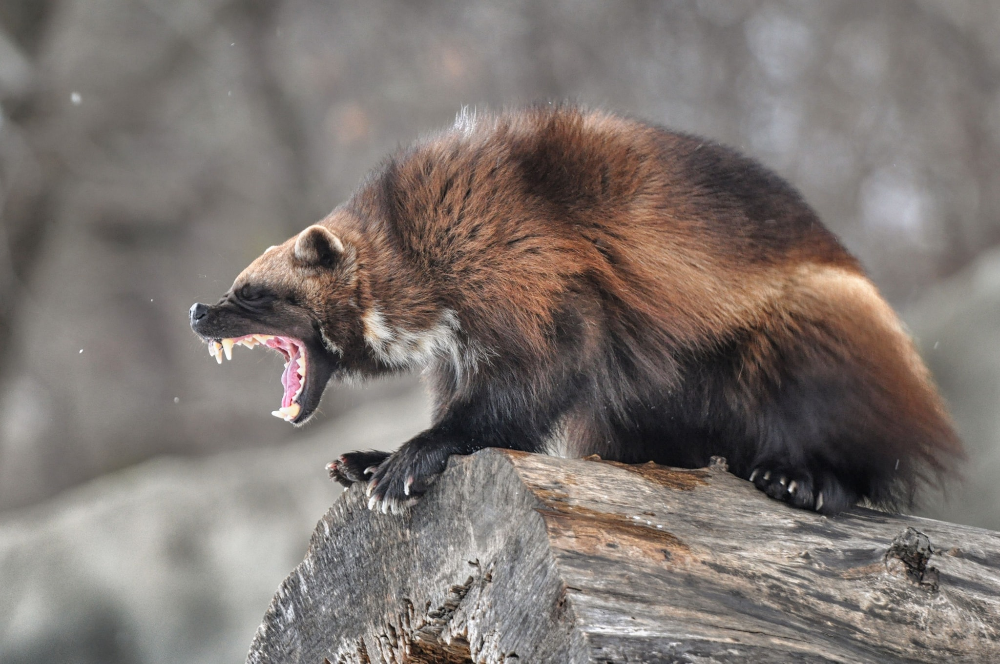
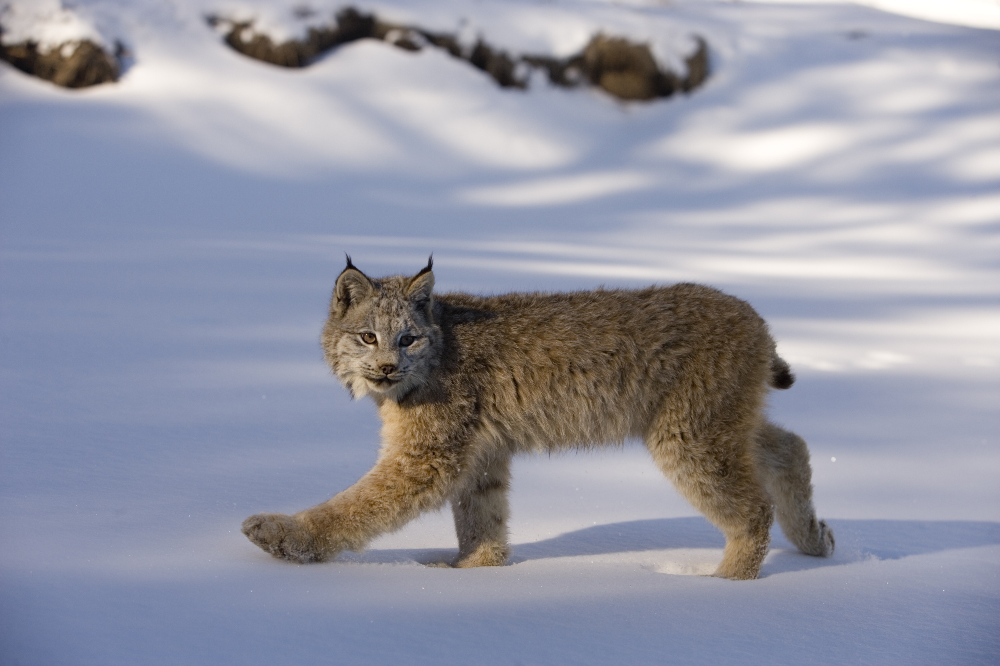
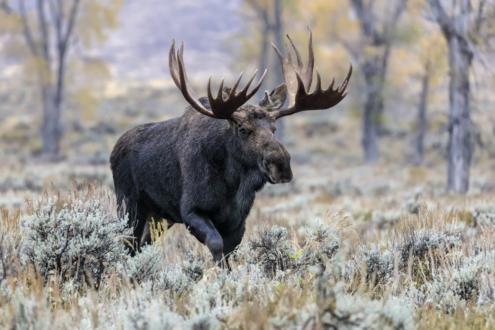

Carcaju

Lince


Alce
Mundo
Glacial
Bem-vindo ao Mundo Glacial, um portal dedicado a desvendar os segredos dos biomas mais frios e desafiadores do nosso planeta! Aqui, mergulharemos profundamente nas regiões árticas e frias, explorando desde as vastas extensões geladas da tundra até as majestosas montanhas cobertas de neve e as costas escarpadas batidas pelo oceano. Prepare-se para uma jornada emocionante enquanto descobrimos a incrível diversidade da vida selvagem que habita esses ambientes extremos. Dos enigmáticos ursos polares e renas da tundra aos ágeis alces e lobos da taiga, das águias douradas que dominam os céus das montanhas aos leões-marinhos que dançam nas águas geladas das regiões costeiras, cada criatura encontrada nessas terras frias possui adaptações notáveis para sobreviver em condições tão desafiadoras. Neste site, você encontrará informações detalhadas, fotografias deslumbrantes e histórias fascinantes sobre os animais e ecossistemas das regiões árticas, tundra, taiga, montanhas e costas frias. Seja bem-vindo ao Mundo Glacial, onde a beleza gélida encontra a vida selvagem resiliente.